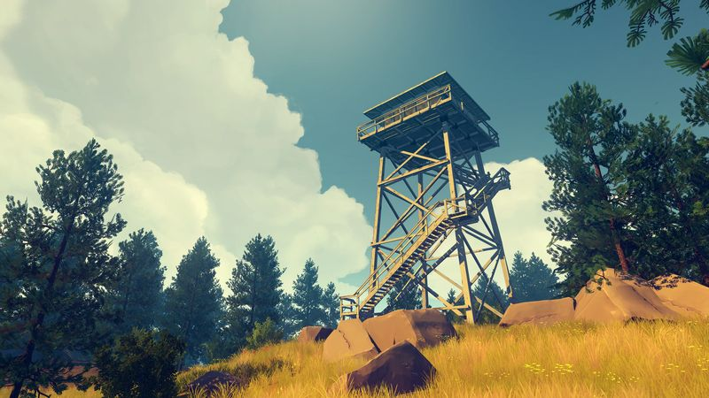
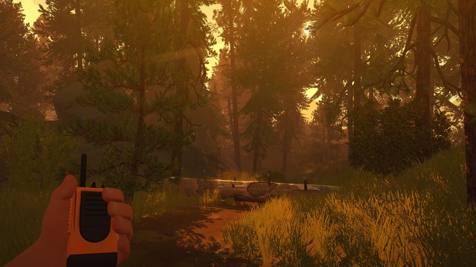

The thirty-second version
Yes it's short. Yes it's worth it.
The only game where your handheld radio has more character development than you.
Firewatch is a short, sad, funny walk through Wyoming with the best voice acting we heard that year. Nothing dramatic happens by triple-A standards, and everything dramatic happens by grown-adult standards. You'll finish it in an evening and think about it for a month. If you want a game to remember, not a game to grind, this is the pick.
Okay, what is this thing?
You're Henry. You're forty-something. Life gave you a very specific kind of bad news and you responded by taking a summer job as a fire lookout in a Wyoming forest, because that's the kind of person you are and also, honestly, the kind of people we absolutely understand. Your only real relationship is a woman on the other end of a walkie-talkie named Delilah, who is delightful and complicated and lies constantly.
It's a walking game, mostly. You get a map, a compass, radio prompts, and the freedom to reply in whichever tone you're feeling. Choices don't fork the story into a thousand endings; they colour Henry as a person, which is a smaller and more grown-up kind of consequence. The writing is a cut above almost anything else in the medium. Play it with headphones. Don't check reviews for the ending first.


Why it escaped the group chat
- First-person narrative, no combat, roughly four hours long from start to end.
- The whole game is a two-hander between Henry and Delilah over radio; the voice work is superb.
- Made by Campo Santo, published by Panic; the first game either studio shipped.
Three dads enter
01
Dad Who Skipped the Tutorial
I walked, I listened, and I shut up.
I'm the first to skip cutscenes in any other game. In Firewatch I sat there in silence for the full four hours with the good headphones on, ignored my phone, and admitted afterwards that Delilah made me miss my own dad. Then I made the other two promise never to mention it, and here I am, mentioning it. Sorry, me.
02
The Descent Guy
I came in ready to complain about walking sims. I didn't.
I've got strong views on games where you can't die and a lot of them are wrong. Firewatch is the one that reset my priors. The map-and-compass system is a real mechanic, the choice-branching has authorial confidence, and the writing is better than my last three podcasts combined. Then I shut up, which never happens. It counted.
03
Normal-ish Dad
One evening, one glass of red, one very good game.
I played it on a Friday night after my kids went to bed and finished it before midnight. I didn't move to check my phone once. That's the single highest praise I hand out to anything. Short doesn't mean small. Short means I can commit to it, and that turns out to be a great gift for a busy dad.
Who it is for and what to watch
Invite these people
- Anyone with headphones and one free evening
- Dads who miss physical paper maps
- Fans of good dialogue and unreliable narrators
Dad caveats
- It is genuinely short; that's the point, not a flaw
- The ending divides people and always will
- The map-and-compass system is the main mechanic; love it or you won't love this
Receipts
Two of us played it in a single sitting on PC; the third stretched it out over three evenings because his back hurt.